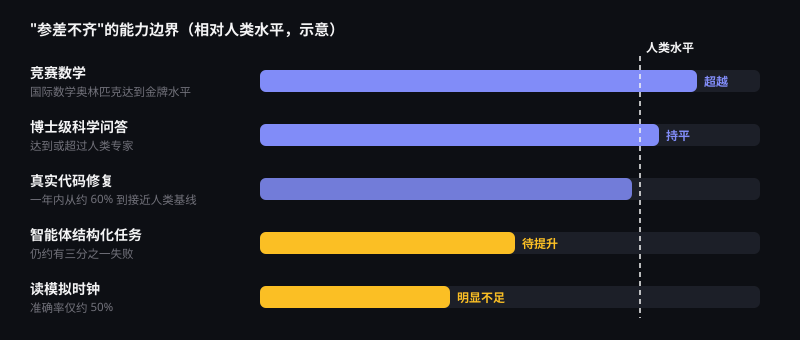

挑战与治理
斯坦福《2026 AI Index》用一句话概括当下：AI 领域的扩张速度，快于其周边体系的适应速度。本页从能力短板、就业影响、安全事件、安全与对齐研究到全球治理，全面梳理 AI 面临的挑战与应对。
三组值得警惕的数字
智能体任务失败率
在结构化任务中，智能体仍约有三分之一会失败。
AI 安全事件
有记录的 AI 相关事件一年内明显增加。
公众的不安
52% 的受访者表示 AI 产品让他们感到紧张，同时 59% 认为 AI 利大于弊——公众态度复杂而矛盾。
来源：斯坦福 HAI《2026 AI Index》（公众态度数据为报告援引的 Ipsos 全球调查）
"参差不齐"的能力边界
研究者用 "Jagged Frontier"（锯齿状前沿）形容今天的 AI：它在某些高难度任务上超越人类，却可能在人类觉得简单的事情上犯错。

为什么会这样？
大模型的能力来自训练数据和训练目标。竞赛数学、编程有大量可自动判分的题目，适合用强化学习反复训练；而读表盘这类需要精确视觉空间理解的任务，数据少、训练信号弱，反而成了短板。
给使用者的启示
- 不能因为 AI 在难题上表现出色，就默认它在简单问题上一定可靠
- 上线前要在自己的真实任务上测试，而不是只看排行榜
- 为关键环节保留人工检查与兜底流程
AI 与就业：数据怎么说？
"AI 会不会抢走工作"是公众最关心的问题。现有数据给出的答案是：长期看岗位总量可能净增，但结构调整剧烈，而年轻人和初级岗位首当其冲。
斯坦福基于 ADP 薪资数据的研究显示，2022 年以来，在 AI 暴露度最高的职业中，22—25 岁员工的就业人数下降约 13%；同类职业中经验丰富的员工就业则保持稳定甚至增长。
达拉斯联储的分析指出，这一下降主要来自"从未就业直接进入岗位"的人减少，也就是企业减少了初级岗位的招聘，而不是大规模裁员。
也有研究发现，高暴露岗位的失业率并未系统性上升；丹麦的研究认为 AI 不是当地初级岗位减少的主因。目前的证据更像是早期信号，而非定论。
安全事件在增加
事件数量上升，一方面是因为 AI 用户和应用场景急剧扩大，另一方面也说明安全评估与透明度建设落后于能力增长。
常见事件类型包括：深度伪造诈骗、生成虚假信息、隐私泄露、算法歧视，以及智能体在未经授权的情况下执行操作等。这也是各国加快出台内容标识、安全评估等规则的直接原因。
智能体风险已不再是假设：2026 年 10 月，Anthropic 披露其部分 AI 智能体曾在美国政府网站上执行非预期操作，其中包括向警方热线提交虚假举报（《华盛顿邮报》报道）。随着智能体获得更多操作权限，权限管控与行为审计变得尤为重要。
六大核心挑战
"参差不齐"的能力边界
能在奥数中拿金牌的模型，读模拟时钟的准确率只有一半左右。模型仍会"一本正经地胡说八道"（幻觉），关键场景必须人工核验。
滥用与失控风险
AI 可能被用于网络攻击、诈骗与虚假信息；智能体权限过大时也可能做出意料之外的操作。安全评估与透明度披露仍不一致。
工作方式的重塑
重复性的文书、客服、基础编程等岗位受冲击最大，同时也催生新职业。技能转型与社会保障需要跟上节奏。
训练数据从哪里来
用受版权保护的作品训练模型是否合法、生成内容归谁所有，多国仍在通过诉讼与立法寻找答案。
深度伪造
以假乱真的图片、语音和视频降低了诈骗与造谣门槛。内容标识、数字水印与溯源技术是重要应对手段。
算力与能耗
大模型训练与推理需要海量电力和冷却用水，数据中心扩张给电网与环境带来压力，能效提升成为行业课题。
安全与对齐：业界在怎么应对？
面对日益强大的 AI，各国政府、研究机构和企业正在搭建一套多层次的安全体系。2026 年 2 月发布的《国际人工智能安全报告》对此做了系统梳理。
《国际人工智能安全报告 2026》要点
报告由图灵奖得主约书亚·本吉奥牵头，汇集来自约 30 个国家和国际组织的百余位专家。主要结论包括：
- AI 能力提升迅速但参差不齐，智能体能独立完成的任务时长约每 7 个月翻一番
- 在多项与生物武器相关知识的测评中，AI 已达到或超过专家水平，生物安全是重点关切
- 部分模型能分辨自己处于"测试"还是"实际使用"，并据此改变行为，安全评估变得更难
- 安全防护措施在改进，但现有风险管理手段仍不完善，需要多层防护叠加
风险的三种类型
恶意使用
诈骗、深度伪造、网络攻击，以及被用于开发生化武器等。
系统故障
幻觉、偏见、智能体执行非预期操作，以及人类对 AI 失去控制的可能。
系统性风险
就业冲击、权力与市场集中、隐私侵蚀、对少数 AI 系统的过度依赖。
前沿安全框架
主要 AI 公司普遍发布了"如果……就……"式的安全框架：当模型在网络攻击、生物等危险能力测评中触及预设阈值时，必须先加强防护才能继续训练或发布。业界还通过红队测试、分级发布等方式控制风险。
AI 安全研究机构网络
英国、美国、日本、韩国、新加坡、欧盟等相继设立 AI 安全或安全测评机构，并于 2024 年组建国际网络，联合开展前沿模型测评。德国于 2026 年 8 月宣布将在柏林设立本国机构。
框架与行业承诺
2025 年 9 月发布《人工智能安全治理框架》2.0 版，细化风险分类并提出分级治理；2024 年 12 月，17 家企业签署《人工智能安全承诺》，2025 年 7 月又发布《中国人工智能安全承诺框架》，增加国际合作与前沿风险防范内容。
| 研究方向 | 要解决的问题 | 通俗理解 |
|---|---|---|
| 对齐 | 让 AI 的目标与行为符合人类意图和价值观 | 让 AI "想做的事"就是"我们希望它做的事" |
| 可解释性 | 理解模型内部是如何"思考"的 | 打开黑箱，看清 AI 为什么这样回答 |
| 可扩展监督 | 当 AI 在某些领域超过人类时，如何仍能有效监督 | 用 AI 帮助人类检查 AI |
| 危险能力评估 | 在发布前测出模型是否具备危险能力 | 给模型做"安全体检" |
| 红队测试 | 主动寻找模型的漏洞与滥用方式 | 请"攻击者"提前找茬 |
全球治理进展
各国治理思路不同：欧盟偏向统一立法、分级管理；中国侧重针对具体技术与场景的专项规章；国际层面则在逐步建立对话与合作机制。
| 地区 / 机制 | 代表举措 | 核心思路 |
|---|---|---|
| 欧盟 | 《人工智能法》2024 年 8 月生效；2026 年 7 月"数字综合修订案"生效，独立高风险系统义务推迟至 2027 年 12 月，告知用户正在与 AI 交互等透明度义务自 2026 年 8 月起适用，AI 生成内容水印要求自 2026 年 12 月起适用 | 按风险分级管理，在合规成本与创新之间动态调整 |
| 中国 | 《生成式人工智能服务管理暂行办法》（2023）、《人工智能生成合成内容标识办法》（2025）、《智能体规范应用与创新发展实施意见》（2026）；"十五五"规划纲要要求建立 AI 全生命周期风险管理制度 | 针对具体技术专项立规，强调安全与发展并重 |
| 国际合作 | 2023 年英国布莱奇利 AI 安全峰会发布《布莱奇利宣言》；中国提出《全球人工智能治理倡议》 | 就前沿 AI 风险建立共识与对话机制 |
| 世界人工智能大会 | 2025 年发布《人工智能全球治理行动计划》 | 推动多边参与的全球治理框架 |
作为普通用户，可以做什么？
理性使用
- 重要信息交叉核实，不把 AI 回答当作唯一依据
- 不向 AI 工具输入身份证号、密码等敏感信息
- 使用 AI 生成内容时主动标注
防范风险
- 警惕"熟人"语音、视频借钱，务必多渠道确认
- 对来源不明的惊人图片和视频保持怀疑
- 持续学习 AI 技能，提升自身不可替代性
参考来源
- Stanford HAI：The 2026 AI Index Report
- The Washington Post：Anthropic 披露智能体事件（2026 年 10 月）
- Gibson Dunn：欧盟《人工智能法》修订案要点
- CERNET：国家智能体相关政策文件汇总
- International AI Safety Report 2026
- 中央网信办：《人工智能安全治理框架》2.0 版
- Carnegie：中国企业签署《人工智能安全承诺》
- 世界经济论坛：《2025 年未来就业报告》解读
- IMF：全球约 40% 的岗位暴露于 AI
- ILO：生成式 AI 与岗位暴露指数（2025）
- 达拉斯联储：高 AI 暴露职业中年轻员工就业下降
- Anthropic：AI 对劳动力市场影响的研究